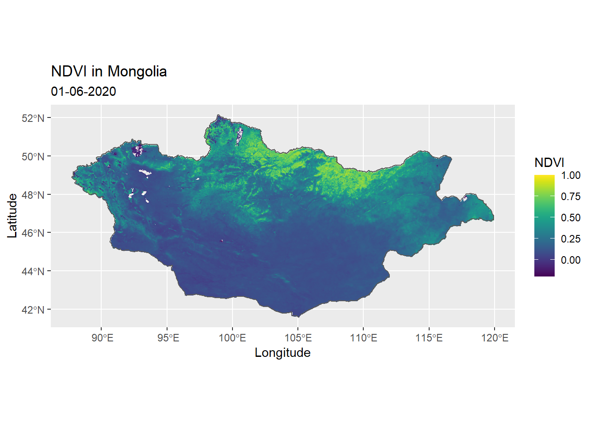

MODIS is an instrument aboard the Terra and Aqua satellites, which orbits the entire Earth every 1-2 days, acquiring data at different spatial resolutions. The data acquired by MODIS describes features of the land, oceans and the atmosphere. A complete list of MODIS data products can be found on the MODIS website.
MODIStspMODIStsp an acronym for ‘MODIS Time Series Processing’, is an R-package for downloading and preprocessing time series of raster data from MODIS data products. This tutorial will focus on downloading and visualising vegetation data, but the same process can be followed with other MODIS data products as well.
MODIStspThe MODIStsp package can be simply downloaded from CRAN as follows
install.packages("MODIStsp")The first step of downloding data is to identify which MODIS data product to use.
This tutorial will use the MODIS Vegetation Index Products (NDVI and EVI), which are two primary vegetation layers; the Normalized Difference Vegetation Index and the Enhanced Vegetation Index. This product will contain data produced on 16-day intervals as well as monthly temporal averaged data, in 3 spatial resolutions (250m, 500m and 1km).
The product IDs for each of these products can also be found on the data product page. Note how the product IDs differ across Terra and Aqua only by the second character of the ID. Hence when using this ID to download data from MODIStsp, we will replace the second character with an asterix(*).
This tutorial will use the ‘Vegetation Indices 16-Day L3 Global 250’ prouct with the product IDs MOD13Q1(Terra Product ID) and MYD13Q1(Aqua Product ID), but will be represented by M*D13Q1.
The product layers(original MODIS layers, quality layers and spectral indexes) available for a given product can be retreived using the following function.
library(MODIStsp)
MODIStsp_get_prodlayers("M*D13Q1")## $prodname
## [1] "Vegetation Indexes_16Days_250m (M*D13Q1)"
##
## $bandnames
## [1] "NDVI" "EVI" "VI_QA" "b1_Red" "b2_NIR" "b3_Blue"
## [7] "b7_SWIR" "View_Zen" "Sun_Zen" "Rel_Az" "DOY" "Rely"
##
## $bandfullnames
## [1] "16 day NDVI average" "16 day EVI average"
## [3] "VI quality indicators" "Surface Reflectance Band 1"
## [5] "Surface Reflectance Band 2" "Surface Reflectance Band 3"
## [7] "Surface Reflectance Band 7" "View zenith angle of VI pixel"
## [9] "Sun zenith angle of VI pixel" "Relative azimuth angle of VI pixel"
## [11] "Day of year of VI pixel" "Quality reliability of VI pixel"
##
## $quality_bandnames
## [1] "QA_qual" "QA_usef" "QA_aer" "QA_adj_cld" "QA_BRDF"
## [6] "QA_mix_cld" "QA_land_wat" "QA_snow_ice" "QA_shd"
##
## $quality_fullnames
## [1] "VI Quality"
## [2] "VI usefulness"
## [3] "Aerosol quantity"
## [4] "Adjacent cloud detected"
## [5] "Atmosphere BRDF correction performed"
## [6] "Mixed Clouds"
## [7] "Land/Water Flag"
## [8] "Possible snow/ice"
## [9] "Possible shadow"
##
## $indexes_bandnames
## [1] "SR" "NDFI" "NDII7" "SAVI"
##
## $indexes_fullnames
## [1] "Simple Ratio (NIR/Red)"
## [2] "Flood Index (Red-SWIR2)/(Red+SWIR2)"
## [3] "NDII7 (NIR-SWIR2)/(NIR+SWIR2)"
## [4] "SAVI (NIR-Red)/(NIR+Red+0.5)*(1+0.5)"Note how the $bandfullnames define each of the $bandnames, the $quality_fullnames define the $quality_bandnames, and the $indexes_fullnames define the $indexes_bandnames.
MODIStsp() functionMODItsp() is the main function of the MODIStsp package, and allows us to download MODIS data products. While this is a very comprehensive function and we will use only a very few arguments, while the entire list of arguments can be found in the MODItsp documentation.
The MODIStsp() function provides two ways of downloading data; either through a GUI (interactively) or through an R script (non-interactively). This tutorial will focus on the non-interactive execution.
MODIStsp(gui = FALSE,
out_folder = "VegetationData",
out_folder_mod = "VegetationData",
selprod = "Vegetation_Indexes_16Days_1Km (M*D13A2)",
bbox = NULL,
bandsel = c("EVI", "NDVI"),
quality_bandsel = "QA_usef",
indexes_bandsel = "SR",
user = "mstp_test" ,
password = "MSTP_test_01",
start_date = "2020.06.01",
end_date = "2020.06.15",
verbose = FALSE)The downloaded files are saved in subfolders within the defined output folder. A seperate subfolder is created for each processed original MODIS layer, Quality Indicator or Spectral Index with an image for each processed date. The images will be named using the following naming convention.
<defined_out_folder>/<product_name>/<layer_name>/<prodcode>_<layername>_<YYYY>_<day-of-year>.<extension>
library(raster)
library(here)
library(ggplot2)
NDVI_raster <- raster(here::here("VegetationData/VI_16Days_1Km_v6/NDVI/MOD13A2_NDVI_2020_161.tif"))
# Converting the raster object into a dataframe
NDVI_df <- as.data.frame(NDVI_raster, xy = TRUE, na.rm = TRUE)
rownames(NDVI_df) <- c()
ggplot(data = NDVI_df,
aes(x=x,y=y)) +
geom_raster(aes(fill = MOD13A2_NDVI_2020_161))
MODIS website: https://modis.gsfc.nasa.gov/